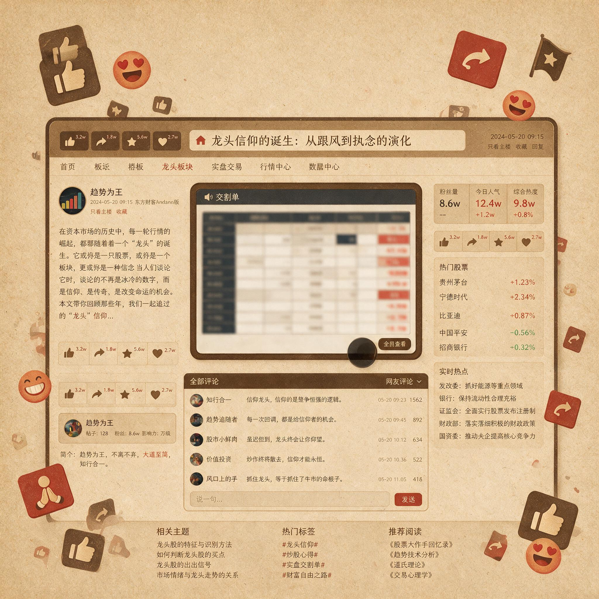

第 3 章
龙头信仰的诞生
一份被反复转发的交割单截图，在某个股票论坛的交易区停留了将近四个月。截图本身并不复杂——一只当月最高连板股的完整买卖记录，从二板位置打板买入，到七板炸板出局，单笔收益率标注为百分之六十一。发帖者在截图下方只写了一行字：只做龙头，死也要死在龙头上。
这个帖子在随后三个月内被点赞超过两万次。回帖区密集排列着“龙头战法，永远的神”“格局决定结局”“恐高都是苦命人”的口号式回复。偶尔出现的质疑——比如有人计算了同期另一只连板股炸板后的亏损幅度——会被迅速淹没在“你不懂龙头”“你的认知配不上你的野心”的队列中。

到当年年底，“龙头战法”这四个字已经从一个帖子标题演变为整个短线社群的核心话语。它不再仅仅是一种交易策略的标签，它变成了一种身份标识：做龙头的人是有格局的人，不做龙头的人是没有理解市场的人。
这是一种信仰的诞生现场。它发生得如此自然，以至于很少有参与者意识到，自己正在见证的不是一个交易流派的成熟，而是一个认知陷阱的挖掘过程。
龙头信仰不是凭空产生的。它是在特定市场生态中反复强化出来的集体认知模式。
要理解这种模式的形成，需要回到那段连板股高度集中的行情本身。2015年下半年到2016年底，A股市场经历了一轮特殊的短线生态。在指数层面，市场刚从剧烈波动中缓慢修复，成交量较峰值大幅萎缩，但局部热点却呈现出高度集中的特征：少数个股在短时间内连续涨停，连板高度不断刷新参与者的心理预期。根据可追溯的统计，这一时期单月出现五连板以上个股的数量，较此前三年均值高出近三倍。七连板、八连板甚至十连板以上的标的，从罕见事件变成了每隔几周就会出现一次的常态。
这种行情的结构特征值得拆解。它不是全面牛市——指数没有同步上行，大量个股仍在底部徘徊甚至继续下跌。资金没有均匀分布在市场中，而是高度集中在少数被贴上“龙头”标签的标的上。
一只个股一旦被确认为“龙头”，就会吸引远超其基本面支撑的流动性，形成自我强化的上涨循环：封板越坚决，买入意愿越强；买入意愿越强，封板越坚决。
在这个循环中，高位接力者持续获利。二板买入的人在三板赚钱，三板买入的人在四板赚钱，甚至五板、六板追进去的人，在七板、八板仍然能够赚钱。这不是某一周或某一月的偶然现象，而是持续了相当长时间的统计现实。
当一个行为模式在足够长的时间跨度内被反复奖励时，执行这个模式的人会自然地产生一种信念：不是运气好，而是方法对。
这种信念的形成过程，可以在当时的论坛讨论中清晰地追踪到。早期帖子讨论的是具体的买卖点：什么位置介入、什么位置止盈、仓位如何分配。讨论的语气是试探性的、经验性的——有人贴出在三板位置试探性买入的记录，语气中带着不确定；有人详细列出了次日可能出现的几种走势以及对应的应对方案。这些帖子里包含着对失败的警惕，包含着对“如果判断错了怎么办”的预案讨论。
但随着行情持续奖励高位接力者，讨论的语气开始变化。试探性的表述被确定性的断言取代。
更关键的变化发生在对亏损的解释方式上：当一个高位接力者偶尔遭遇炸板亏损时，社群提供的解释不是“高位接力本身就存在概率风险”，而是“你的格局不够”“你卖早了”“你没有真正理解龙头战法”。亏损被重新定义为执行者的缺陷，而不是策略本身在特定行情下失效的证明。
这就是龙头信仰形成的第一个机制：幸存者偏差的自我强化。在持续奖励高位接力的行情中，“做龙头”的幸存者会不断积累成功案例。每一次成功都被记录、被传播、被用来证明战法的有效性。而失败案例——那些在同样位置买入却遭遇炸板亏损的交易——则被归因为个人执行问题，被排除在战法有效性的讨论之外。这种筛选机制不是有意识的欺骗，而是一种认知上的自然倾向：当一个人连续多次在同一模式中获利时，他会本能地认为获利的原因是模式正确，而不是行情恰好匹配了模式。更隐蔽的是，这种自我强化会改变交易者对风险的感知方式。
一个在上升行情中反复获利的交易者，会逐渐降低对风险的敏感度——不是因为他不知道有风险，而是因为他的经验告诉他，风险最终都会被化解。炸板了会回封、低开了会拉起来、分歧了会转一致——这些在上升行情中确实反复发生的现象，被他内化为龙头股的本质属性，而不是特定情绪周期阶段的暂时特征。
当足够多的交易者同时经历这种认知重塑时，一种集体性的信念就产生了。
这就是龙头信仰形成的第二个机制：社群话语对异见的驱逐。2016年初的一篇热帖可以作为观察样本。帖子标题是“为什么你总是卖飞龙头”，内容列举了五种被定义为“错误卖出”的情形：开盘低开卖出、盘中急跌卖出、尾盘炸板卖出、次日低开卖出、回调三个点卖出。帖子给出的结论是：所有这些卖出都是因为“格局不够”，正确的做法是“锁仓不动，让利润奔跑”。这篇帖子获得了大量认同。回帖中充斥着“说到心坎里了”“每次卖了就拉”“以后打死不卖龙头”的回应。但几乎没有人讨论一个前提问题：这些“错误卖出”的判断标准是什么？
是事后股价确实又涨回来了吗？如果是，那么这只是在用结果反推决策的正确性——当行情处于上升期时，任何卖出都可能被证明是“错误”的，因为股价会继续涨；但当行情转入退潮期时，同样的锁仓行为可能导致利润全部回吐甚至亏损。
这种以结果反推决策的逻辑缺陷在当时几乎没有被公开质疑过。不是因为没有交易者意识到这个问题，而是因为提出质疑的成本太高。在“龙头战法”已经成为社群主流话语的环境中，质疑战法本身会被等同于质疑所有成功者的经验。一个敢于在热帖下计算炸板概率的人，会被迅速贴上“不懂龙头”“格局太小”“亏钱的命”的标签。这种话语压力不需要明文规定——它通过点赞、回复、转发等互动机制自然形成，将异见者驱逐到讨论的边缘，或者让他们选择沉默。
长期沉默的结果是，公开讨论中只剩下一种声音。新进入社群的交易者看到的全是成功案例和坚定信仰者，他们自然地假设这就是市场的全部真相。
他们开始学习这套话语，使用同样的词汇，复制同样的操作模式——不是因为独立思考后认同，而是因为不这样做就无法融入社群。
第三个机制则作用于那些已经通过龙头战法获得显著收益的交易者：资金体量增长后的路径依赖。一个交易者从几十万资金起步，通过龙头战法做到数百万甚至更高体量时，他的成功经验会被深度固化。他清楚地记得自己每一笔关键交易：在哪只股票上赚到了第一桶金，在哪次连板中实现了资金翻倍，在哪次锁仓后收获了最大利润。这些记忆不是抽象的数据，而是带有强烈情绪印记的个人历史。当一个人的财富、自信和社交身份都与某种交易模式深度绑定时，放弃或质疑这种模式几乎等同于否定自己。
更现实的约束来自资金层面。当交易者的资金体量增长后，他面临的选择范围实际上在收窄：小盘股容量不够，大盘股弹性不足，只有那些成交活跃、流动性充沛的龙头股才能容纳他的资金进出。他不是因为信仰龙头才做龙头——他是因为只能做龙头才更需要信仰龙头。
这种由资金体量倒逼出来的路径依赖，被包装成“专注龙头”“只做最强”的策略宣言，进一步强化了整个社群对龙头战法的信念。
这三个机制——幸存者偏差的自我强化、社群话语对异见的驱逐、资金体量增长后的路径依赖——相互嵌套、彼此加强，共同完成了龙头战法的信仰化过程。这个过程不是某个人或某个团体有意识策划的结果，而是特定行情生态下群体认知自然演化的产物。它不需要一个教主或一个组织来推动——行情本身就成了最有力的传教者。
2016年某位因重仓龙头股而实现资金量级跃升的交易者，在一次公开分享中说过一段被广泛引用的话。他说很多人问他为什么敢在高位加仓，他的回答是这不是敢不敢的问题，是对龙头的信仰够不够。他认为龙头不会套人，套人的都不是龙头。只要认准了龙头，任何回调都是加仓机会。
这段话的修辞结构值得分析。“龙头不会套人”——这是一个全称判断，它把“龙头”定义为一个不会导致亏损的类别。
“套人的都不是龙头”——这是一个同义反复，它用定义的方式排除了所有反例。如果一个股票套人了，那它就不是龙头；如果它是龙头，那它就不会套人。这套话语在逻辑上是自我封闭的：它不需要面对反例，因为所有反例都被定义为不属于讨论范围。
但在当时的行情环境下，这套话语听起来是成立的。因为在那段时期，“被确认为龙头”的股票确实很少在高位直接套人——即使见顶，也往往会在高位反复震荡，给持仓者充分的出局机会。这不是龙头的某种神秘属性，而是上升期情绪周期的典型特征：买盘充足，承接有力，即使主力资金开始撤退，仍有大量跟风盘维持流动性。但这一特征被信仰者理解为龙头的本质属性——他们认为“龙头不会套人”是一个普遍规律，而不是特定情绪周期阶段的暂时现象。
这种误读的后果在行情转折时暴露无遗。2016年底到2017年初，连板股生态开始发生变化。标志性的事件是某只被社群广泛认定为“年度总龙头”的个股，在完成八连板后突然遭遇连续跌停。
首日跌停时，论坛上仍有大量帖子号召锁仓不动、宣称龙头首阴是买点、断言次日必然反包。次日继续跌停时，号召变成了沉默。第三日跌停打开但尾盘再度封死时，沉默变成了互相指责——有人质问是谁在高位接盘，有人说龙头战法本来就是搏傻，有人说早就提醒过要见顶了。
那只股票从最高点到阶段低点，跌幅超过百分之四十。对于在六板、七板甚至八板位置介入的交易者来说，这意味着本金损失可能接近腰斩——而腰斩意味着需要翻倍才能回本。这一简单的算术事实，在狂热期从未出现在讨论中。
更值得关注的是论坛生态的变化。在此后约半年的时间里，前述“龙头战法实战交流”帖子下活跃的布道者ID，有相当比例停止了更新或清空了内容。那些曾经斩钉截铁宣称“龙头不会套人”“格局决定结局”的声音，要么消失，要么转向了新的热点——他们开始讨论低吸战法、首板战法、趋势战法，仿佛之前的信仰从未存在过。这不是某一个人的行为模式，而是一种结构性的现象。
当行情环境改变后，建立在旧环境之上的信仰体系会迅速瓦解——不是因为信仰者意识到了信仰本身的缺陷，而是因为信仰不再能产生收益。在短线交易社群中，收益是信仰最有效的粘合剂，也是信仰最致命的溶解剂。当收益消失时，信仰者不会反思信仰本身，他们会寻找下一个能产生收益的信仰。
但对于那些在信仰高峰期入场、在退潮期承受亏损的普通交易者来说，这个切换并不容易。他们已经内化了“只做龙头”“格局锁仓”“恐高都是苦命人”的行为准则——这些准则在上升期保护过他们，让他们拿住了利润；在退潮期却成了毁灭他们的工具，让他们扛下了全部跌幅。同一套规则，在周期的不同阶段产生完全相反的效果。
这恰恰回应了一个常见的反方解释：有人会说，龙头战法的亏损不是战法本身的问题，而是执行纪律不严或资金管理失控导致的——任何策略严格执行都能盈利。这个说法忽略了一个关键事实：策略的有效性不是独立于市场环境存在的。所谓“严格执行”，本身就依赖于对策略适用条件的准确判断。
当一个交易者在退潮期“严格执行”了在上升期学到的锁仓纪律时，他恰恰是在执行层面做到了极致——而结果是灾难性的。这不是纪律问题，这是分类问题。交易者没有能力区分“当前行情处于情绪周期的哪个阶段”，因为这套分类系统本身就不存在于他所学到的战法框架中。
龙头战法告诉他的是：找到龙头、买入龙头、持有龙头。它没有告诉他：什么样的行情环境适合这样做，什么样的行情环境不适合这样做；什么样的信号意味着可以格局锁仓，什么样的信号意味着必须无条件离场。这些判断需要的是对情绪周期整体节奏的感知能力——正是上一章讨论的那种无法被固化为教条的体感判断。
当这种体感判断被从战法体系中剥离出去之后，剩下的就是一具没有体温的尸体：一套在任何行情中都执行相同动作的机械规则。而这套规则之所以在一段时期内看起来有效，只是因为那一段时期的行情恰好与规则匹配。当行情变化后，规则失效——这不是规则的问题，而是规则使用者的问题：他们把一段特定行情的分泌物当成了永恒规律。
回到2016年那个被反复转发的帖子。在随后的退潮期中，如果有人回头翻看那两万多个点赞的ID列表，会发现一个冷峻的事实：其中相当比例的ID在此后半年内停止了发言；一部分ID开始发布亏损求助帖；只有极少数ID仍然活跃并且保持盈利——而这些持续盈利的ID，几乎无一例外地在后来的讨论中加入了大量关于周期、节奏、退潮期管住手的内容。
他们没有放弃龙头战法，但他们已经不再信仰龙头战法——他们把战法从神坛上搬下来，放回了工具箱里。
但那些只学到了信仰部分、没有经历完整周期检验的交易者，他们的工具箱里只有一把锤子——而且这把锤子上刻着“格局”两个字。
一组数据可以勾勒出这场信仰运动的后续轨迹：在该帖子首次发布的十八个月内，论坛上标题含有“龙头战法”的帖子数量从月均三十余篇激增至超过两百篇，又在随后六个月内回落至月均不足二十篇。那些在高峰期最活跃的一百个布道者ID中，超过六十个在退潮期开始后的半年内停止更新或清空了全部内容。
在那段行情中，一个被反复引用的统计表格出现在多个论坛的技术分析区。表格标题是“本月连板股统计”，列示了当月所有实现五连板以上个股的代码、名称、连板高度、启动市值和最终涨幅。根据可追溯的记录，2016年3月到8月间，单月五连板以上个股数量分别为七只、九只、十一只、八只、十二只、十只。七连板以上个股在这六个月内累计出现了二十三次。而在2014年全年，这一数字仅为四次。这不是温和的增长，而是一个数量级的跃迁。
表格下方的回帖中，有人用加粗字体写道：“这是龙头战法的黄金时代。”另一个人回复：“不是黄金时代，是新时代。市场变了，只有龙头能涨，杂毛永远都是杂毛。”
这种表述——将一段时期的统计特征上升为市场结构的永久性变化——在当时的讨论中几乎无人质疑。因为数据就摆在眼前：连板股的数量在增加，高度在刷新，高位接力的收益率在持续为正。当事实似乎在为一种理论背书时，质疑那个理论就显得不合时宜。
但那张表格中有一个被大多数人忽略的细节。在统计连板股数量的同时，表格的制作者也标注了每只个股见顶后的回落幅度。以七连板以上个股为样本，见顶后二十个交易日内，平均回落幅度为百分之三十一。其中回落幅度最大的一只个股，从最高点计算在十四个交易日内跌去了百分之五十二。这个数据没有被加粗，没有被引用，没有成为任何口号的基础。它在表格中存在了几个月，但讨论区里几乎没有人谈论它。不是因为它不重要，而是因为它不符合“龙头战法有效”的叙事框架。在信仰形成的过程中，被看见的不是全部数据，而是被选择的数据。
幸存者偏差不仅体现在交易者个人的经验积累中——它首先体现在社群对信息的筛选和传播机制中。
成功案例被截图、被转发、被加精、被置顶；失败案例被沉底、被忽略、被归类为“个例”或“执行问题”。这种信息筛选不需要一个中央控制者——它通过点赞机制、回复排序和版主加精等去中心化的方式自然完成。
结果是，一个刚刚进入社群的新人，在翻阅前几页帖子时看到的是一个近乎完美的成功叙事：每一个帖子都在证明龙头战法有效，每一张截图都在展示惊人的收益率，每一条回复都在强化“格局决定结局”的信念。
这种信息环境对个体判断力的影响比人们愿意承认的要深远得多。一个交易者在独立面对市场时，他至少需要自己承担决策的全部权重——买入还是卖出，持有还是止损，这些选择最终会以盈亏的形式反馈到他的账户上。
但当这个交易者嵌入一个社群时，决策的认知负担被分散了：他可以参考别人的操作，可以模仿别人的策略，可以在亏损时从社群的解释框架中获得心理安慰。这种分散在短期内降低了决策的焦虑感，在上升行情中尤其如此——因为大多数人的操作都在赚钱，社群提供的解释框架（“格局”“信仰”“龙头不会套人”）与账户的盈利状态相互印证。
焦虑感下降，确定感上升。这种确定感不是来自对市场的独立判断，而是来自对社群的归属。
当一个交易者说“我相信龙头战法”时，他表达的不仅是对一种策略的认可，更是对一个群体的效忠——他相信的是那些和他使用同样话语、分享同样信念、赞美同样偶像的人。这种效忠在行情上行期是保护性的：它让交易者敢于持有盈利仓位，不被短期波动震出局。
但它的代价在行情转折时才显现：当效忠的对象——那套话语、那些信念、那个偶像——不再能产生收益时，效忠本身变成了牢笼。交易者不是不想止损，而是止损意味着背叛：背叛自己曾经信奉的战法，背叛社群中那些仍在高喊“锁仓”的同伴，背叛那个曾经在高位加仓时充满格局感的自己。
2016年9月的一个帖子记录了这种背叛的心理成本。发帖者自称从当年三月开始使用龙头战法，前五个月资金翻了两倍。他在帖子中详细描述了自己的操作逻辑、选股标准和持仓心态，语气中带着明显的自豪感。
但在八月中旬的一次操作中，他在某只六连板个股的第七个涨停板位置加仓，随后该股炸板回落，次日低开低走，三个交易日内跌幅超过百分之二十五。他在帖子中写道：“我知道应该止损。但我做不到。因为过去五个月每一次回调都是加仓机会，每一次止损都是卖在最低点。我的经验告诉我扛过去就赢了。但这次没扛过去。”
帖子末尾，他问了一个问题：“到底是战法错了，还是我错了？”回帖区的第一条高赞回复是：“战法没错，是你执行不到位。龙头首阴是买点不是卖点，你卖在最低点说明你根本不懂龙头战法。”第二条回复是：“格局不够，建议销户。”第三条回复是：“亏钱就怪战法，赚钱就是自己厉害？这种人不配做龙头。”
没有一条回复讨论那只个股本身的见顶信号——成交量异常放大、封板力度反复减弱、同板块跟风股提前走弱。没有一条回复讨论当时的市场整体环境——连板股炸板率在八月已经开始上升，高位接力的盈亏比正在恶化。讨论的焦点完全集中在发帖者的个人品质上：他的格局、他的执行力、他对战法的忠诚度。
这就是社群话语对异见的驱逐在微观层面的运作方式。当一个亏损案例出现时，社群的反应不是检验策略本身是否在当前环境下失效，而是检验亏损者是否足够虔诚。亏损被道德化了——它不是概率分布中必然存在的一部分，而是个人缺陷的证明。
这种道德化的话语体系有一个隐蔽的功能：它保护了信仰本身不受反例的冲击。如果每一个亏损案例都可以被解释为个人执行问题，那么战法本身永远是正确的——它不需要面对任何反证，因为所有反证都被重新定义为使用者的失败。
这套话语体系在逻辑上是完美的自我循环：成功证明战法有效，失败证明执行不到位；赚钱是格局的回报，亏钱是格局不够的惩罚。无论结果如何，信仰都不会被证伪。
这种不可证伪性正是信仰区别于策略的核心特征。一个策略是可以被检验、被修正、被放弃的——如果它在特定条件下反复失效，理性的做法是调整策略或暂时不使用它。但一个信仰不能被检验——因为检验的前提是承认信仰可能是错的，而信仰的本质恰恰是拒绝这种可能性。
“龙头不会套人”不是一个可以被数据检验的假设，它是一个定义性的陈述：套人的股票不是龙头。这句话没有提供任何关于市场的可验证信息，它只是规定了“龙头”这个词的使用方式。但在社群的话语实践中，它被当作一个关于市场运行的真理来传播和接受。
传播这个陈述的人感觉自己在说一件深刻的事——一件揭示了市场本质的事。接受这个陈述的人感觉自己获得了某种超越普通交易者的洞见。但实际上，他们只是在交换一个同义反复的句子，这个句子的信息量为零。
仍在更新的ID中，约有三分之一转向了与龙头战法完全无关的交易策略讨论。曾经被奉为信条的口诀——那些关于格局、关于恐高、关于死也要死在龙头上的宣言——开始以截图形式出现在嘲讽帖中，配文往往是某只龙头股见顶后的跌幅统计。狂热冷却的速度，和它升温的速度一样快。
而冷却之后留下的不是反思，是一片话语真空——旧的信仰已经崩塌，新的解释尚未建立。那些在信仰高峰期入场的交易者被留在这片真空中，手里握着一套曾经有效、如今失效的规则，面对着一个不再奖励高位接力的市场。
风险边界： 1. 本章描述的龙头战法信仰化过程基于特定历史时期的行情特征——连板股高度集中、高位接力持续获利——这一行情特征并非A股短线生态的恒常状态。它本身就是特定宏观流动性环境、监管周期与市场参与者结构共同作用的产物。将这一时期的经验推广到其他时期，本身即构成风险。
- 本章引用的论坛帖子、公开分享内容、交割单截图等材料反映了特定社群在特定时期的话语特征，不代表所有短线交易者的认知水平或行为模式。社群的公开讨论存在严重的幸存者偏差——沉默的亏损者不会发帖。3. 本章不暗示任何形式的“龙头战法无效论”。龙头战法作为一种交易策略框架，在恰当的情绪周期阶段具有显著的盈利潜力。本章的核心判断是：将这一框架信仰化——即将其视为超越周期约束的永恒规律——是亏损的主要来源。4. 本章不提供任何形式的择时判断或周期定位方法。识别当前行情处于情绪周期的哪个阶段，是需要独立判断能力的复杂决策——本书后续章节将逐步展开这一主题的分析框架，但不构成操作建议。读者的每一笔交易决策都应由其自身承担全部责任。